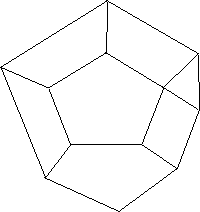
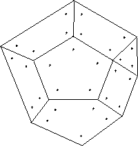
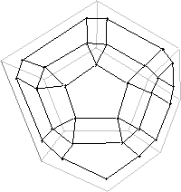
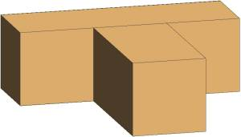
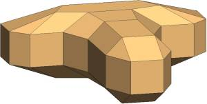
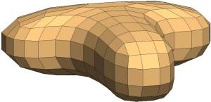
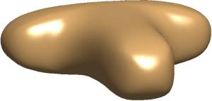

|  |  |  |
| Initial Mesh | Subdivision | Refined Mesh |
It can be shown, that the sequence of shapes obtained by recursive subdivision converges to a biquadratic B-Spline surface, except perhaps in the neighbourhood of a finite number of points, where it converges to a C^1 surface.
The Doo-Sabin subdivision surface on the previous page and the following
images were created using the MATLAB 5.0 m-files available here.
Documentation and demos are included.
|  |  |
|  |  |